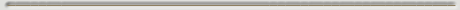

|

In het voorjaar 2002 zijn de (laatste) medewerkers van TWI van van Zuidplantsoen 4 verhuisd naar het 'Elektrogebouw' aan de Mekelweg. Om het nageslacht een blik te gunnen in het oude vertrouwde Zuidplantsoen heeft Charles van der Mast voor de verhuizing in 2001 een aantal video-opnamen gemaakt - al wandelend door het gebouw. Dat is gedaan met een analoge kamera, vandaar de nostalgische kwaliteit! Door de studenten Bastiaan Bakker (2001) en Raul Kooter (2006) is - uitgaande van deze video-opnamen - deze website gemaakt. Dit is een productie van Charles van der Mast, basiseenheid Mens-Machine-Interactie (2006).
|